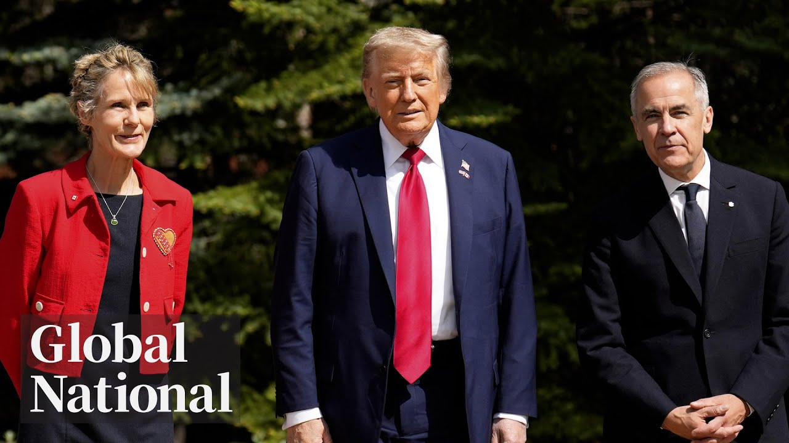

【Global News: 加美贸易谈判加速，卡尼主持G7领导人会议｜2025-06-16】
Summary: Leaders gather in Alberta for the G7 summit, focusing on trade, global security, and energy. Tensions between Israel and Iran escalate, disrupting Middle East travel. A Minnesota manhunt ends with an arrest linked to political violence.
摘要： 领导人在阿尔伯塔省齐聚G7峰会，聚焦贸易、全球安全和能源问题。以色列与伊朗紧张局势升级，扰乱中东旅行。明尼苏达州追捕行动结束，逮捕一名与政治暴力有关的嫌疑人。

⏱️ Estimated Reading Time: 36 min
📚 六级生词 📚 雅思生词 📚 托福生词 📚 专八生词 📚 SAT生词 📚 考研生词 📚 GRE生词 📚 高考生词
[Music] Canada on the world stage this Monday night.
[音乐] 本周一晚上，加拿大登上世界舞台。
Leaders gather in Canonascus, Alberta.
领导人们聚集在阿尔伯塔省的卡农纳斯卡斯。
What's on the agenda?
议程上有什么？
Mr. President, uh, welcome to Canada.
总统先生，呃，欢迎来到加拿大。
And what happened when the US president met Canada's prime minister one-on-one?
当美国总统与加拿大总理一对一见面时发生了什么？
I'm a terror person. I've always been a terrorist. It's simple. It's easy.
我是关税人。我一直都是关税人。这很简单。这很容易。
Israel and Iran escalate their attacks, leaving the world on edge.
以色列和伊朗升级了他们的攻击，让世界处于紧张状态。
Our Mike Armstrong is in Jordan tonight and the manhunt is over.
我们的迈克·阿姆斯特朗今晚在约旦，追捕行动已经结束。
His crimes are the stuff of nightmares.
他的罪行是噩梦般的存在。
How police caught a Minnesota man accused of assassinating a lawmaker and plotting to kill dozens of others.
警方如何抓获一名被指控暗杀议员并密谋杀害数十人的明尼苏达州男子。
Global National with Donna Fzen reporting tonight from B Alberta.
全球国家，唐娜·芬森今晚从阿尔伯塔省B地报道。
We are in the Rocky Mountains.
我们在落基山脉。
The stunning vistas of Cananascus, Alberta.
阿尔伯塔省卡农纳斯卡斯令人惊叹的景色。
A beautiful backdrop for world leaders meeting at this G7 summit where Canada's prime minister is at the head of the table and has high expectations.
这是世界领导人在G7峰会上会面的美丽背景，加拿大总理坐在桌首，并抱有很高的期望。
We will have open frank discussions over the course of uh the next two days.
我们将在接下来的两天里进行开放而坦诚的讨论。
Uh we might not agree on absolutely every issue.
呃，我们可能不会在每一个问题上都完全一致。
Uh but where we will cooperate we will make an enormous difference uh for our citizens um and for the world.
呃，但在我们将合作的地方，我们将为我们的公民和世界带来巨大的改变。
Good evening and thanks for joining us.
晚上好，感谢加入我们。
We are in BA down the road from the highly secure zone where the leaders are meeting.
我们在BA，距离领导人会面的高度安全区域不远。
Here is who is taking part.
以下是参与者的名单。
The leaders of France, Italy, Germany, the UK and Japan and the US also invited eight countries that are not officially part of the G7 including India and Brazil.
法国、意大利、德国、英国、日本和美国的领导人还邀请了八个非G7正式成员的国家，包括印度和巴西。
Now late today, a new development.
今天晚些时候，有了新的进展。
The White House press secretary announced President Trump will be leaving the G7 tonight because of what's going on in the Middle East.
白宫新闻秘书宣布，特朗普总统今晚将离开G7，因为中东发生的事情。
Trump will leave after the dinner with the other leaders.
特朗普将在与其他领导人共进晚餐后离开。
For Canada, so much of this G7 is focused on trade and Trump.
对加拿大来说，这次G7的焦点很大程度上集中在贸易和特朗普上。
The two leaders met in person first thing this morning.
两位领导人今天早上首先亲自会面。
There was no deal today, but this afternoon the prime minister's office did put out a statement saying there is now a timeline for a deal.
今天没有达成协议，但今天下午总理办公室发表声明称，现在有了达成协议的时间表。
Our chief political correspondent David Aken is in Canonascus.
我们的首席政治记者大卫·阿肯在卡农纳斯卡斯。
David, what do we know?
大卫，我们了解到什么？
Yeah, well, the leaders first of all spent a long time talking.
是的，首先，领导人们花了很长时间交谈。
They were talking for 70 minutes and of that 30 minutes was just the two leaders one-on-one by themselves and afterwards they came out and they've decided to have what they're calling accelerated trade talks and they put a timeline on it as you mentioned get a deal in 30 days.
他们交谈了70分钟，其中30分钟是两位领导人单独一对一交谈，之后他们出来并决定进行所谓的加速贸易谈判，并设定了时间表，如你所提到的，在30天内达成协议。
Mr. President, uh, welcome to Canada.
总统先生，呃，欢迎来到加拿大。
It started off well.
开始时很顺利。
A little flattery from the host.
东道主的一点奉承。
The G7 is nothing without US leadership.
没有美国的领导，G7什么都不是。
Gracious appreciation from the guest.
客人的慷慨感谢。
Thank you very much, Mark. I appreciate it.
非常感谢，马克。我很感激。
And we've developed a very good relationship.
我们已经建立了非常好的关系。
There was no 51st state talk.
没有关于第51个州的讨论。
Officials said it was respectful, productive, touching on many topics, but trade and tariffs were top of mind.
官员们表示，这次会面是尊重且富有成效的，涉及许多话题，但贸易和关税是最重要的。
I'm a tariff person. I've always been a tariff. It's simple. It's easy.
我是关税人。我一直都是关税人。这很简单。这很容易。
Before Carney could respond, Trump jumped in again.
在卡尼能够回应之前，特朗普再次插话。
I think Mark has a a more complex idea, but also very good.
我认为马克有一个更复杂的想法，但也非常好。
So, we're going to look at both and we're going to see what we're going to come out with something.
所以，我们将看看两者，然后看看我们能达成什么。
And then Trump held the stage for the next several minutes offering up opinions about membership in the G7.
然后特朗普在接下来的几分钟里占据了舞台，就G7的成员资格发表意见。
He thinks Russia should never have been kicked out of the G8.
他认为俄罗斯不应该被踢出G8。
It was a big mistake.
这是一个大错误。
And maybe China should be invited to join the G7.
也许应该邀请中国加入G7。
Well, it's not a bad idea. I don't mind that.
嗯，这不是一个坏主意。我不介意。
If somebody wants to suggest China coming in and he thinks Iran is on the wrong side of its conflict with Israel, I'd say Iran is not winning this war.
如果有人想建议中国加入，他认为伊朗在与以色列的冲突中站在错误的一边，我会说伊朗不会赢得这场战争。
and they should talk and they should talk immediately before it's too late.
他们应该谈谈，而且应该立即谈，以免为时已晚。
It was a freewheeling 10 minutes and then Carney all business politely took over.
这是随意的十分钟，然后卡尼礼貌地接管了话题。
If you don't mind uh just I'm going to exercise my role if you will as G7 chair since uh we have a few more minutes with the president and his team and all went well.
如果你不介意，呃，我将行使我作为G7主席的角色，因为我们还有几分钟时间与总统和他的团队在一起，一切都很顺利。
I think we're going to accomplish a lot and I expect to and I think our primary focus will be trade and trade with Canada and I'm sure we can work something out.
我认为我们将取得很多成就，我期待如此，我认为我们的主要焦点将是贸易以及与加拿大的贸易，我相信我们可以达成一些协议。
So David, some optimism.
所以大卫，有一些乐观情绪。
What is the assessment of how the meeting went from others who were in the room with Trump and Carney?
与特朗普和卡尼同在一个房间的其他人对会议进展的评估如何？
Well, officials were really upbeat about the meeting.
嗯，官员们对会议非常乐观。
Uh here's the Minister of Canada US relations and Canada's ambassador to Washington.
呃，这是加拿大美国关系部长和加拿大驻华盛顿大使。
They were both in the room.
他们都在房间里。
We collectively think we're making progress in coming to a deal that would be in the economic interest of both countries.
我们集体认为，我们正在朝着达成一项符合两国经济利益的协议取得进展。
We feel a sense of acceleration in the discussions in the last couple of weeks and that is a very good thing.
我们感觉到过去几周的讨论有所加速，这是一件非常好的事情。
Now, one of the reasons that officials, Canadian officials were feeling so upbeat is because of the tone taken by President Trump.
现在，加拿大官员感到如此乐观的原因之一是特朗普总统的语气。
The president is very respectful of the prime minister and of Canada.
总统非常尊重总理和加拿大。
He spoke many times about how much he likes it here, how much he likes Canada.
他多次谈到他多么喜欢这里，多么喜欢加拿大。
Now, what about the PM?
现在，总理呢？
Well, we are not going to hear from Mark Carney, who tell us all about this, until his closing press conference tomorrow.
嗯，我们不会听到马克·卡尼对此的全部说法，直到他明天的闭幕新闻发布会。
But when once when Carney was walking into a meeting today, a reporter yelled out, "Hey, how did that meeting with Trump go?"
但今天有一次当卡尼走进会议时，一名记者喊道：“嘿，与特朗普的会议进行得怎么样？”
And Carney had one word, fantastic.
卡尼只有一个词，太棒了。
Donna and David, this is much more than a trade meeting, of course.
唐娜和大卫，这当然不仅仅是一次贸易会议。
Peace and security are on the agenda, too.
和平与安全也在议程上。
The world is on edge watching Iran and Israel.
世界紧张地关注着伊朗和以色列。
There's Russia's war on Ukraine.
还有俄罗斯对乌克兰的战争。
What are the expectations on those issues?
对这些问题的期望是什么？
Yes, absolutely.
是的，绝对。
Iran was a topic of discussion by all leaders today, either in their one-on-one meetings or as a group.
伊朗是今天所有领导人讨论的话题，无论是在他们的单独会面中还是作为一个团体。
Canada is not really a leader on that topic.
加拿大在这个话题上并不是真正的领导者。
Mark Carney Moore, a facilitator of discussion.
马克·卡尼·摩尔，讨论的推动者。
But Canada does want to lead in two areas when it comes to global security.
但加拿大确实希望在两个领域引领全球安全。
And the first is Ukraine.
首先是乌克兰。
Canada has been one of the strongest advocates for Ukraine's defense ever since that war with Russia started.
自与俄罗斯的战争开始以来，加拿大一直是乌克兰防御的最强烈倡导者之一。
And Mark Carney has invited Ukrainian President Vladimir Silinski here tomorrow.
马克·卡尼已邀请乌克兰总统弗拉基米尔·西林斯基明天来这里。
It's the first session of the day with all G7 leaders and some of those other invited leaders.
这是今天的第一场会议，所有G7领导人和一些其他受邀领导人将参加。
So that's one thing.
这是一件事。
The second thing is defense spending.
第二件事是国防开支。
Mark Carney wants to make sure everybody knows that he announced earlier this week or or last week to say that Canada is now going to meet its NATO target of spending 2% of GDP on defense.
马克·卡尼希望确保每个人都知道，他本周早些时候或上周宣布，加拿大现在将达到其北约国防开支占GDP 2%的目标。
And so Carney's invited the NATO secretary general here for a discussion.
因此，卡尼邀请了北约秘书长来这里进行讨论。
One wrinkle on that, that secretary general, his name's Mark Rucha.
有一个问题，那位秘书长，他的名字叫马克·鲁查。
He's been saying 2% may not be enough.
他一直在说2%可能不够。
NATO members, you might need to spend 5%.
北约成员国，你们可能需要花费5%。
So we'll see where that discussion goes tomorrow, Don.
所以我们明天看看讨论会走向何方，唐。
All right, David, thank you.
好的，大卫，谢谢。
So no deal for Canada on trade, but President Trump and the British Prime Minister say they are signing a trade deal to slash tariffs on goods from both those countries.
所以加拿大在贸易上没有达成协议，但特朗普总统和英国首相表示，他们将签署一项贸易协议，大幅削减两国商品的关税。
That deal does not include tariffs on UK steel.
该协议不包括对英国钢铁的关税。
Alberta's premier is not taking part directly in the G7 meeting.
阿尔伯塔省省长没有直接参加G7会议。
Danielle Smith, though, as host of this province, was part of the receiving line as G7 leaders, including President Trump, arrived at the Calgary airport.
然而，丹妮尔·史密斯作为该省的东道主，是G7领导人（包括特朗普总统）抵达卡尔加里机场时的接待队伍的一部分。
The two did exchange a few words.
两人确实交换了几句话。
Our Alberta correspondent Heather Urick's West is with me.
我们的阿尔伯塔记者希瑟·尤里克·韦斯特和我在一起。
Heather, energy, electricity are on the agenda.
希瑟，能源、电力在议程上。
What about oil?
石油呢？
Well, Benjamin is certainly the priority of Premier Smith.
嗯，本杰明当然是史密斯省长的优先事项。
But G7 leaders will be discussing emerging energy needs too, like the huge amounts of electricity needed to power AI.
但G7领导人还将讨论新兴的能源需求，比如为人工智能提供动力所需的大量电力。
As Canada looks to become an energy superpower, it will need to make sure its investments today don't come with a risk of being left behind.
随着加拿大希望成为能源超级大国，它需要确保今天的投资不会带来落后的风险。
Prime Minister Mark Carney has gone so far as to talk about Canada as an energy superpower.
马克·卡尼总理甚至将加拿大称为能源超级大国。
About 100 kilometers from Canonascis, the premers of Alberta and Saskatchewan, provinces where the energy sector drives the economy, are hoping to make their voices heard.
距离卡农纳斯基斯约100公里，能源行业驱动经济的阿尔伯塔省和萨斯喀彻温省的省长们希望他们的声音被听到。
And I would say that the policies that we enact as a nation and at the provincial level, they do matter.
我想说，我们作为一个国家和省级层面制定的政策确实很重要。
At a forum in Calgary hosted by an energy industry advocacy group, Smith and Mo spoke about the need for new pipelines, regulatory reform, and to repeal climate policies that restrict the growth of oil and gas.
在卡尔加里由能源行业倡导组织主办的一个论坛上，史密斯和莫谈到了对新管道、监管改革以及废除限制石油和天然气增长的气候政策的需求。
A constant champion for her province's biggest sector, who's been a frequent lobbyist in Washington and Florida in Trump's second term, Smith exchanged a few words with the US president as part of an airport welcoming team.
作为她省份最大行业的坚定支持者，在特朗普的第二任期内经常在华盛顿和佛罗里达游说的史密斯，作为机场欢迎团队的一部分，与美国总统交换了几句话。
But the world's future energy needs will not be oil alone with disagreement among analysts about whether global oil demand is truly set to grow.
但世界未来的能源需求将不仅仅是石油，分析师们对全球石油需求是否真的会增长存在分歧。
I think the most important thing is not to be unhedged where you've put all your eggs in one basket.
我认为最重要的是不要把所有鸡蛋放在一个篮子里。
Instead, the incoming director of energy and natural resources policy at the University of Calgary says Canada and Alberta will need to focus on natural gas and critical minerals while recognizing that artificial intelligence could see the world's electricity needs sore, particularly clean electricity to support kind of a G7 AI position for fear that if we don't provide the right energy pathway in the G7 countries that the industry will migrate.
相反，卡尔加里大学即将上任的能源和自然资源政策主任表示，加拿大和阿尔伯塔省将需要专注于天然气和关键矿物，同时认识到人工智能可能导致全球电力需求激增，特别是清洁电力，以支持G7的人工智能立场，因为担心如果我们不在G7国家提供正确的能源路径，该行业将迁移。
to China.
到中国。
Now, that's longterm, of course.
当然，这是长期的。
Right now, if we're talking energy, all eyes are on the Middle East.
现在，如果我们谈论能源，所有人的目光都集中在中东。
Weak oil prices rose dramatically last week when Israel launched strikes on Iran.
上周以色列对伊朗发动袭击时，疲软的油价大幅上涨。
They cooled slightly today in hopes of a deescalation, but prices remain volatile, which could be an opportunity for Canadian crude.
今天略有降温，希望局势缓和，但价格仍然波动，这可能是加拿大原油的机会。
Donna.
唐娜。
All right, Heather, you're West. Thank you.
好的，希瑟，你是韦斯特。谢谢。
Among the Albertans meeting President Trump at Calgary airport was Steven Crochild of the Sutina First Nation.
在卡尔加里机场会见特朗普总统的阿尔伯塔人中，有苏蒂纳第一民族的史蒂文·克罗柴尔德。
Crochild said afterward he was filled with rage before Trump's arrival because he feels Trump has caused so much pain and suffering in the world.
克罗柴尔德后来表示，在特朗普到来之前，他充满了愤怒，因为他觉得特朗普在世界上造成了如此多的痛苦和苦难。
He was going to go home but says he decided to stay after consulting leaders within his community.
他本打算回家，但表示在咨询了社区领袖后决定留下。
And the US president ended up talking to him longer than any of the other people in that welcoming party.
美国总统最终与他交谈的时间比欢迎队伍中的其他人都长。
President Trump is reportedly planning not to sign a joint statement at the G7 calling for a deescalation of the conflict between Iran and Israel.
据报道，特朗普总统计划不在G7峰会上签署呼吁伊朗和以色列冲突降级的联合声明。
Israel's prime minister now says the Israeli military controls the skies over Thran and he won't rule out ordering the assassination of Iran's supreme leader.
以色列总理表示，以色列军方控制了德黑兰上空的制空权，且不排除下令刺杀伊朗最高领袖的可能性。
And late today, President Trump posted on social media that everyone should immediately evacuate Thrron.
今天晚些时候，特朗普总统在社交媒体上发文，呼吁所有人立即撤离德黑兰。
Also today, Israel targeted the headquarters of Iran's state broadcaster while it was live on air.
同日，以色列袭击了伊朗国家广播电视台总部，当时节目正在直播。
Vincent Mechavini reports.
文森特·梅卡维尼报道。
This is the moment live on air Iran's state news broadcaster was struck by Israel Monday.
这是周一伊朗国家新闻电视台在直播时遭以色列袭击的画面。
A loud explosion audible.
爆炸声清晰可闻。
The studio complex hit as the program anchor reported on the crisis.
节目主持人正在报道危机时，演播室大楼被击中。
A bold attack on Tran's messaging, too, before fire gutted the whole building.
这是对德黑兰信息传播的大胆袭击，随后大火吞噬了整个建筑。
For a fourth night, the skies over the Middle East were illuminated by artillery exchange.
中东上空连续第四晚被交火照亮。
Again, Israel's Iron Dome system was overwhelmed with Iranian rockets damaging homes, businesses, and a refinery in the port of Hifur.
以色列的铁穹系统再次被伊朗火箭弹压制，房屋、企业和海法港的一家炼油厂受损。
Hospital staff forced to move some of those already injured underground with millions across Israel sleeping in shelters.
医护人员被迫将部分伤者转移至地下，数百万以色列人在避难所过夜。
Israel says that while it's strategically targeting nuclear and defense sites, Iran is indiscriminately firing on civilians like those in this apartment block and on non-military targets like this synagogue and school.
以色列称其战略打击核设施和防御目标，而伊朗则无差别袭击平民（如这栋公寓楼）和非军事目标（如这座犹太教堂和学校）。
The US embassy in Tel Aviv also sustaining damage.
美国驻特拉维夫大使馆也遭到破坏。
Despite increasing deaths and injuries, Israel's president says they will not relent.
尽管伤亡人数上升，以色列总统表示不会退缩。
I call upon the leaders of the free world convening in Canada in the G7 summit.
我呼吁在加拿大参加G7峰会的自由世界领导人。
They all should stand up with us.
他们都应与我们站在一起。
But Prime Minister Netanyahu has vowed to continue to victory.
但内塔尼亚胡总理誓言战斗到底直至胜利。
We control the skies of Thran.
我们控制了德黑兰的天空。
We strike these targets, the regime's targets, in contrast to the criminal regime of Iran that targets our civilians and comes to kill children and women.
我们打击这些政权目标，而伊朗的犯罪政权却以我们的平民为目标，杀害妇女儿童。
Inside Iran, state news videos show long lines at gas stations as citizens seek ways out of larger cities, anxious about what may happen next.
伊朗国内，国家新闻视频显示加油站排起长队，民众急于离开大城市，对局势感到焦虑。
The Iranian regime continues to condemn both Israel and its closest ally, America.
伊朗政权继续谴责以色列及其最亲密盟友美国。
But in a sign of growing concern inside Thran, tonight there are reports Iranian officials are reaching out to President Trump via Gulf neighbors to push for a deal that could bring about an immediate ceasefire.
但德黑兰内部担忧加剧，今晚有报道称伊朗官员正通过海湾邻国联系特朗普总统，推动达成立即停火协议。
Donna Vincent Makavini, thanks.
唐娜·文森特·梅卡维尼，谢谢。
Travel across the Middle East has been disrupted because of the attacks by Israel and Iran.
以色列和伊朗的袭击导致中东地区交通中断。
Airspace has been closed, flights cancelled.
领空关闭，航班取消。
Mike Armstrong is in Jordan tonight for us.
迈克·阿姆斯特朗今晚在约旦为我们报道。
Mike. Well, Donna, the airport here in Aman was closed for a time at the beginning of this conflict.
迈克：唐娜，安曼机场在冲突初期一度关闭。
It has now reopened, but it's nowhere near as busy as it normally would be.
现已重新开放，但远不如往常繁忙。
According to one travel industry group, in recent days, the disruption has been widespread.
据一家旅游业组织称，近日交通中断现象普遍。
More than 700 flights have been delayed or cancelled in the region.
该地区超过700架次航班延误或取消。
Major carriers from British Airways, United, Emirates, Air France, and others are suspending operations or rerouting flights, not only in Israel and Iran, but in major hubs in Dubai, UAE, Jordan, and Lebanon.
英国航空、美联航、阿联酋航空、法航等主要航空公司暂停运营或改道航班，范围不仅包括以色列和伊朗，还涉及迪拜、阿联酋、约旦和黎巴嫩的主要枢纽。
This was the scene in Beirut Monday.
这是周一贝鲁特的场景。
Hundreds are stuck hoping to get out.
数百人滞留机场等待离开。
This man says he's been at the airport since Friday, trying to get home to Germany.
这名男子表示自周五起便滞留机场，试图返回德国。
He waited all weekend and maybe giving up.
他等待了整个周末，现在可能准备放弃。
Now, all civilian flights have been suspended at Israel's main airport in Tel Aviv until further notice.
目前，以色列特拉维夫主机场所有民用航班无限期暂停。
200 flights were cancelled Monday alone.
仅周一就有200架次航班取消。
We're looking for alternative places to stay because it may be a lengthy one and so looking for like kitchenetses, some place to kind of reduce some of our expenses.
我们正在寻找替代住所，因为滞留可能持续较久，需寻找带小厨房等能节省开支的地方。
United Airlines is suspending flights to Tel Aviv through July.
美联航暂停飞往特拉维夫的航班至7月。
Delta is suspending them through August.
达美航空暂停至8月。
Air Canada recently extended its suspension of flights to Israel to September 8th, but getting anywhere in the region is a little more complicated right now.
加拿大航空将飞往以色列的航班暂停期延长至9月8日，但目前前往该地区任何地方都更加困难。
We were on a flight into Aman today that made it through, but with a bit of a delay.
我们今天搭乘的航班成功抵达安曼，但略有延误。
The Royal Jordanian flight would normally travel through Israeli airspace.
约旦皇家航空的航班通常穿越以色列领空。
Instead, on this day, it came across the Mediterranean, turned straight south, and went around Israel.
但当日改道地中海，向南直飞绕过以色列。
Donna, Mike Armstrong in Aman, Jordan. Thanks, Mike.
唐娜，迈克·阿姆斯特朗在约旦安曼报道。谢谢，迈克。
The Minnesota manhunt is over.
明尼苏达州搜捕行动结束。
Coming up, how the accused killer was caught and chilling new details from the FBI.
接下来报道嫌疑人如何落网及FBI披露的骇人新细节。
This is Mount Rundle overlooking B.
这是俯瞰班夫的朗德尔山。
We are back from Alberta in a moment.
稍后我们将从阿尔伯塔省发回报道。
The man accused of killing a Minnesota state lawmaker and her husband and injuring another state representative has appeared in court.
被控杀害明尼苏达州一名议员及其丈夫并击伤另一名州议员的嫌疑人已出庭。
He's charged with multiple counts of seconddegree murder, seconddegree attempted murder, stalking, and firearms offenses.
他被控多项二级谋杀、二级谋杀未遂、跟踪和枪支犯罪。
If convicted, he could face the death penalty.
若罪名成立，他可能面临死刑。
Jackson Prosco has the chilling details of how police say he carried out the attacks.
杰克逊·普罗斯科带来警方描述的袭击骇人细节。
The largest manhunt in Minnesota history came to an end Sunday night as 57year-old Vance Bolter was arrested in a field near his home.
明尼苏达州史上最大搜捕行动于周日夜间结束，57岁的万斯·博尔特在住所附近的田野被捕。
Today, the manhunt is over, but the investigation continues.
今日搜捕虽结束，但调查仍在继续。
There are disturbing new allegations about an attack police say was months in the making.
警方称这起策划数月的袭击有新指控令人不安。
This was a political assassination.
这是一起政治暗杀。
Investigators say Bolter visited the homes of four Democratic lawmakers Saturday night.
调查人员称博尔特周六晚曾前往四位民主党议员住所。
First, Minnesota State Senator Jim Hoffman and his wife, where Bolter allegedly presented himself as a police officer wearing a silicone face mask.
首先是明尼苏达州参议员吉姆·霍夫曼夫妇家，博尔特据称戴着硅胶面具冒充警察。
The Hoffman's didn't believe him.
霍夫曼夫妇未轻信。
Investigators say Bolter forced his way in and shot the couple who are expected to survive.
调查人员称博尔特强行闯入并枪击这对夫妇，预计其能幸存。
It's no exaggeration to say this is the stuff of nightmares.
毫不夸张地说，这如同噩梦。
From there, Bolter visited two other homes.
随后博尔特又前往另外两处住所。
One lawmaker wasn't home.
一名议员不在家。
Police say they spotted him parked near another's house, but he appears to have been scared off.
警方发现他停在另一名议员家附近，但似乎被吓退。
Later, when officers arrived to check on Representative Melissa Hortman and her husband, they saw Boulder outside.
之后警员查看梅丽莎·霍特曼议员夫妇时，发现博尔特在屋外。
He opened fire and rushed inside.
他开火后冲入屋内。
He repeatedly fired into the house and when he entered he murdered Representative Hortman and her husband.
他多次向屋内射击，进入后杀害了霍特曼议员及其丈夫。
All told, investigators recovered a list of 45 potential targets from Bolter.
调查人员从博尔特处找到一份45人的潜在目标名单。
All of them Democrats.
均为民主党人。
This cannot be the norm.
这绝不能成为常态。
It cannot be the way that we deal with our political differences.
政治分歧绝不能以此方式解决。
At a growing memorial to the victims, there is shock and despair.
不断扩大的受害者纪念处充满震惊与绝望。
It's just the fact that this is where we are as a country is really throwing me up.
国家沦落至此让我深感恶心。
The alleged actions of one man have rattled a state that was already among the most politically divided in America.
一人所为震动本已政治分裂严重的该州。
Jackson Prosco, Global News, Washington.
杰克逊·普罗斯科，全球新闻，华盛顿报道。
You're looking at the beautiful Canonascus Valley, home of this year's G7 Summit.
您看到的是今年G7峰会举办地——美丽的卡纳纳斯基斯谷。
We're back in a moment.
稍后回来。
Welcome back to BA.
欢迎回到班夫。
As world leaders meet nearby in Canonascus, Canadian premers and US governors were also face to face in Boston today talking economic ties and underscoring that leaders on both sides of the border want a US Canada trade deal.
当世界各国领导人在卡纳纳斯基斯会晤时，加拿大省长和美国州长今日也在波士顿面对面讨论经济联系，强调双方都希望达成美加贸易协议。
This shows unity and I can tell you after our talk and we build relationships, uh, we're all united here.
这展现了团结，会谈后我们建立的关系让我们在此团结一致。
We are all united.
我们全体团结。
All from different political stripes, by the way, in different countries.
尽管来自不同国家、不同政治阵营。
Ontario's premier is joined by Atlantic premers and New England governors.
安大略省长与大西洋省份省长及新英格兰州长共同参会。
They discuss the impact of Trump's tariffs and opportunities to collaborate on energy, trade, tourism, and manufacturing.
他们讨论了特朗普关税的影响及能源、贸易、旅游和制造业的合作机遇。
There is news tonight about federal conservative leader Pierre Polyv.
今晚有关联邦保守党领袖皮埃尔·波利耶夫的消息。
He will face a mandatory leadership review in January.
他将于1月面临强制领导层审查。
Polyv lost his seat and lost the election earlier this year.
波利耶夫今年早些时候失去席位并败选。
Sources have confirmed to Global News the vote will take place at a Conservative Party policy convention in Calgary.
消息人士向全球新闻证实，投票将在卡尔加里的保守党政策大会上举行。
If a leader does not resign after an election loss, the Conservative Party's constitution requires members vote on whether that leader should stay.
若领袖败选后不辞职，保守党党章要求成员投票决定其去留。
Holv is set to run in a bi-election in the Alberta riding of Battle River Crowoot, though no date has been set for that.
波利耶夫计划参加阿尔伯塔省巴特尔河-克罗伍特选区的补选，但日期未定。
Next, with Canada on the world stage for the G7, how prepared is Mark Carney to meet this moment?
接下来：加拿大因G7登上世界舞台，马克·卡尼准备如何应对？
There are lots of picturesque places near here, like Two Jack Lake with Mount Brundle rising above it.
附近有许多风景如画的地方，如两杰克湖与朗德尔山相映成趣。
We're back from BA in a moment.
稍后从班夫继续报道。
Welcome back to BA, Alberta.
欢迎回到阿尔伯塔省班夫。
This G7 summit is a big moment for Canada's prime minister.
此次G7峰会对加拿大总理至关重要。
Mark Carney has set lofty goals of elevating Canada's position on the world stage, making it the strongest economy in the G7, and weaning it off its dependence on the US.
马克·卡尼设定了提升加拿大国际地位、使其成为G7最强经济体并减少对美国依赖的宏伟目标。
A big part of his strategy is cultivating deeper relationships with other countries, and meeting that will be his first big test.
其战略核心是深化与其他国家的关系，此次峰会将是他首次重大考验。
It's his first international summit as Canada's prime minister, but this is far from Mark Carney's first rodeo.
这是他作为加拿大总理首次参加国际峰会，但马克·卡尼对此并不陌生。
As former head of the Bank of England and the Bank of Canada, he's been to multiple meetings like this.
作为前英国央行和加拿大央行行长，他多次参加此类会议。
This is actually his sweet spot.
这实则是他的专长领域。
I've seen him at G7 and G20 meetings and things personally over the years.
多年来我亲眼见证他在G7和G20会议上的表现。
He really knows this space.
他深谙此道。
Carney has experience, credentials, and highlevel contacts.
卡尼拥有经验、资历和高级别人脉。
We certainly have a a prime minister with gravitas.
我们确实有一位庄重的总理。
There is uh momentum.
当前势头良好。
There is clear desire to get things done.
各方明显渴望取得成果。
He's focused on implementation, I think, in a more direct way than than Prime Minister Trudeau was.
我认为他比前任特鲁多总理更直接地专注于落实。
So, he's he's going to drive hard on things.
因此他将大力推进事务。
Expanding the guest list to include seven countries that are not part of the G7, including India, Mexico, and Brazil suggests Carney intends to deliver what he promised in his victory speech on election night, pivoting away from reliance on the US.
邀请印度、墨西哥和巴西等七个非G7国家参会，表明卡尼意在兑现胜选演讲中"减少依赖美国"的承诺。
We have many, many other options than the United States to build prosperity for all Canadians.
除美国外，我们还有许多其他选择可为全体加拿大人创造繁荣。
Canada, Carney has said, needs to think big and act bigger.
卡尼称加拿大需"敢想敢为"。
And this is his chance to cultivate deeper relationships beyond the US.
这是他深化与美国之外国家关系的机遇。
Canada can work towards a new international set of partnerships that are more secure, prosperous, just, and free.
加拿大可建立更安全、繁荣、公正自由的新型国际伙伴关系。
Canada's last prime minister didn't talk like that, nor did the one before that.
上届及前届加拿大总理从未如此表态。
We've lost 25 years.
我们已浪费25年。
We haven't just lost 10.
不止十年。
We haven't just and and I would pin that on significant attitudinal complacency.
我将此归因于严重的自满态度。
Donald Trump has woken up a a significant realization that uh we can't be complacent anymore.
特朗普让我们深刻意识到不能再自满。
But the US president is also a wild card.
但美国总统仍是变数。
He did choose to wear a Canada US pin today.
他今天确实选择佩戴了一枚加美徽章。
And though he hinted a trade deal might be possible, he called himself a tariff guy.
尽管他暗示可能达成贸易协议，但他自称关税强硬派。
And Carney can't afford to rile him.
卡尼不能冒险激怒他。
So, I think it'll be a nonthreatening or confrontational kind of conversation about Canada diversifying while at the same time trying to get deals with the US as best as we can.
因此，我认为这将是一次非威胁性或对抗性的对话，讨论加拿大在尽可能争取与美国达成协议的同时实现多元化。
The advice from the man who was prime minister when the G7 was last held in Canonascis.
这是上次G7在卡诺纳西斯举行时担任总理的人的建议。
Jean Cretch says if Trump gets mad, keep calm.
让·克雷奇表示，如果特朗普发怒，要保持冷静。
That he tends to be a bully once in a while and don't lose your cool when you have a bully in front of you unless you grab him by the neck as I have to do one time.
他偶尔会表现得像个霸凌者，面对霸凌者时不要失去冷静，除非像我有一次不得不掐住他的脖子那样。
A joke of course believes it is always better to talk even with leaders you don't agree with and so far Carney appears to be mastering that.
当然这是个玩笑，他认为即使与不认同的领导人交谈也总是更好，而到目前为止卡尼似乎掌握了这一点。
Okay, that is Global National for this Monday.
好的，以上就是本周一的《全球国家》。
I'm Donna Fzen.
我是唐娜·芬岑。
Tonight's your candidate is right here.
今晚的候选人就在这里。
Wildlife coexists with people around here.
野生动物与这里的人们共存。
It's always milling around Canonascus, Alberta.
它们总是在阿尔伯塔省的卡诺纳西斯周围活动。
Thanks for watching and we'll see you back here tomorrow as the G7 Summit wraps up.
感谢收看，明天G7峰会结束时我们将再次见面。
For now, bye-bye.
现在，再见。